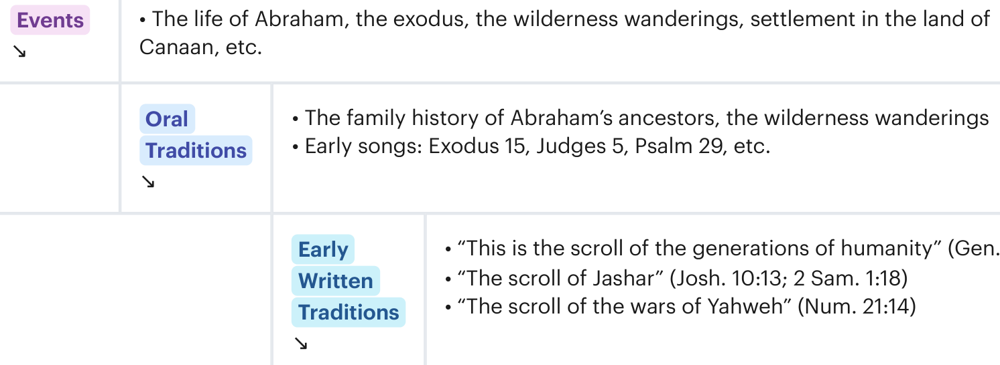
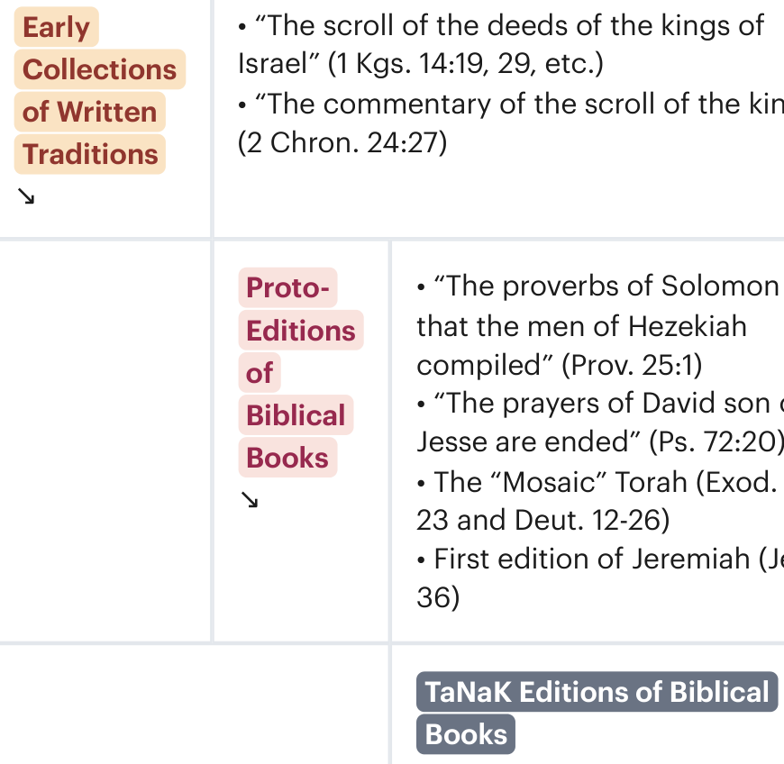

Sessão 10: A Origem da Bíblia de uma Perspectiva HistóricaSession 10: The Origin of the Bible From a Historical Perspective
Principais LiçõesKey Takeaways
A divindade e a autoridade da Bíblia não negam os processos humanos que a trouxeram à existência.The Bible’s divinity and authority doesn’t negate the human processes that brought it into existence.
A Bíblia Hebraica é uma coleção de coleções composta por materiais textuais pré-existentes de diferentes períodos da história e literatura de Israel.The Hebrew Bible is a collection of collections made up of preexisting textual materials from different periods of Israel’s history and literature.
Encontramos pistas por toda a Bíblia Hebraica que revelam como cada livro é uma coleção organizada de materiais pré-existentes que foram trazidos para uma nova composição e nela desempenham uma nova função.We find clues throughout the Hebrew Bible that reveal how each book is an organized collection of preexisting materials that have been brought into, and play a new function within, a new composition.
As Origens da Bíblia de uma Perspectiva HistóricaThe Origins of the Bible From a Historical Perspective
As origens escritas da Bíblia também são iluminadas através de pesquisas históricas sobre a tecnologia da escrita, produção de texto e transmissão no antigo Israel e em suas culturas circundantes.The written origins of the Bible are also illuminated through historical research into the technology of writing, text production, and transmission in ancient Israel and their surrounding cultures.
A Bíblia Hebraica é uma coleção de coleções composta por materiais textuais de todos os períodos da história, religião e literatura de Israel. A literatura tradicional do antigo Israel surgiu através de um processo de múltiplas etapas que ainda é discernível ao se observar as evidências literárias dentro dos próprios textos.The Hebrew Bible is a collection of collections made up of textual materials from all periods of Israel’s history, religion, and literature. Ancient Israelite tradition literature came into existence through a multistep process that is still discernible by looking at literary evidence within the texts themselves.

As Origens da Bíblia de uma Perspectiva Histórica. Criado por Tim Mackie para BibleProject Classroom: Introdução à Bíblia Hebraica (2019).The Origins of the Bible From a Historical Perspective. Created by Tim Mackie for BibleProject Classroom: Introduction to the Hebrew Bible (2019).

As Origens da Bíblia de uma Perspectiva Histórica. Criado por Tim Mackie para BibleProject Classroom: Introdução à Bíblia Hebraica (2019).The Origins of the Bible From a Historical Perspective. Created by Tim Mackie for BibleProject Classroom: Introduction to the Hebrew Bible (2019).
As Origens Escribais da BíbliaThe Scribal Origins of the Bible
Temos uma abundância de evidências sobre o status e a prática do escriba profissional no antigo Oriente Próximo. Para estudos recentes, veja o seguinte:We have an abundance of evidence about the status and practice of the professional scribe in the ancient Near East. For recent scholarship, see the following:
John Walton e Brent Sandy, O Mundo Perdido da EscrituraJohn Walton and Brent Sandy, The Lost World of Scripture
William Schniedewind, Como a Bíblia se Tornou um LivroWilliam Schniedewind, How the Bible Became a Book
Karel van der Toorn, Cultura Escribal e a Formação da Bíblia HebraicaKarel van der Toorn, Scribal Culture and the Making of the Hebrew Bible
Os escribas eram uma classe profissional no mundo antigo que manipulava e criava textos de várias maneiras.Scribes were a professional class in the ancient world who handled and created texts in a variety of ways.
Eles criavam novos textos que eram encomendados, como cartas, recibos e correspondência diplomática.They created new texts that were commissioned such as letters, receipts, and diplomatic correspondence.
Eles preservavam a literatura tradicional valorizada de sua cultura, como poemas, histórias épicas, textos rituais e mitologia cultural.They preserved the cherished traditional literature of their culture such as poems, epic stories, ritual texts, and cultural mythology.
Eles preservavam os registros oficiais de suas instituições políticas e religiosas, como os anais das guerras e atividades do rei.They preserved the official records of their political and religious institution such as the annals of the king’s wars and activities.
Pergunta para ReflexãoReflection Question
Resuma o que você acha mais importante para as pessoas entenderem sobre o processo composicional da Bíblia ou sobre a natureza da Bíblia como humana e divina.Summarize what you think is most important for people to understand about the compositional process of the Bible or about the nature of the Bible as human and divine.